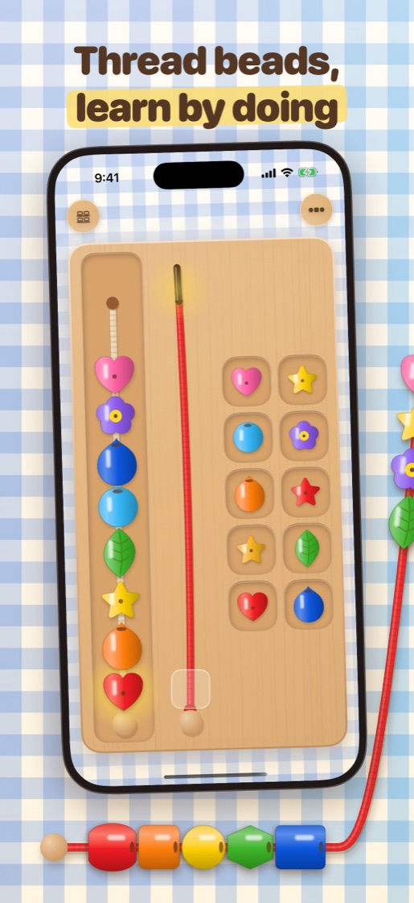
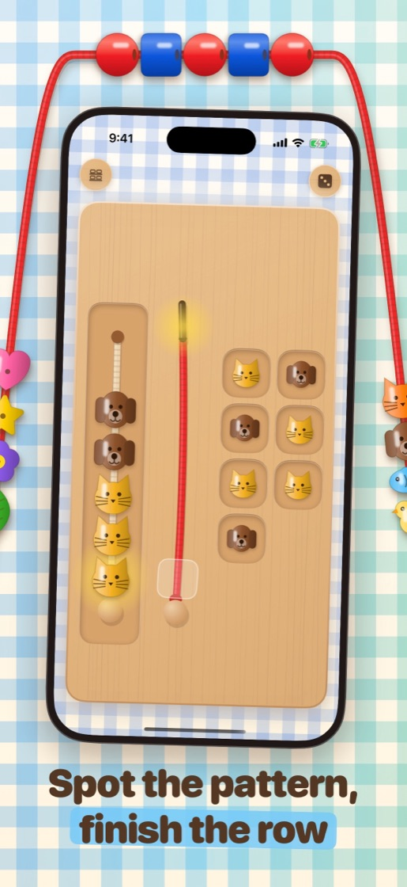
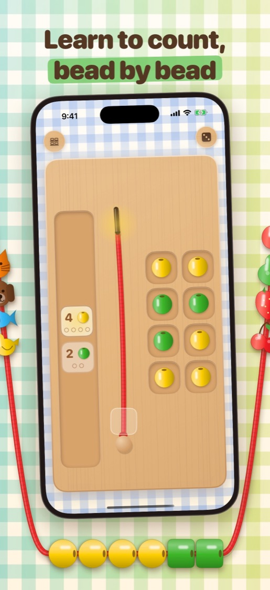
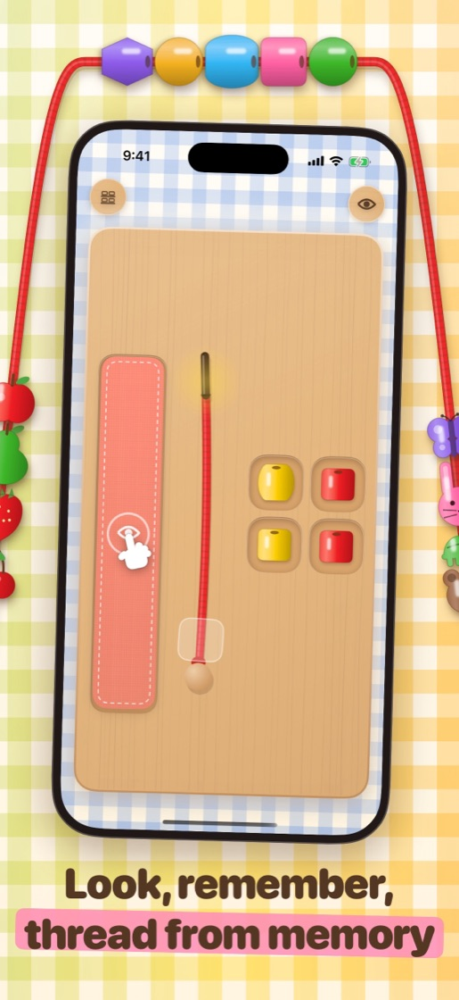
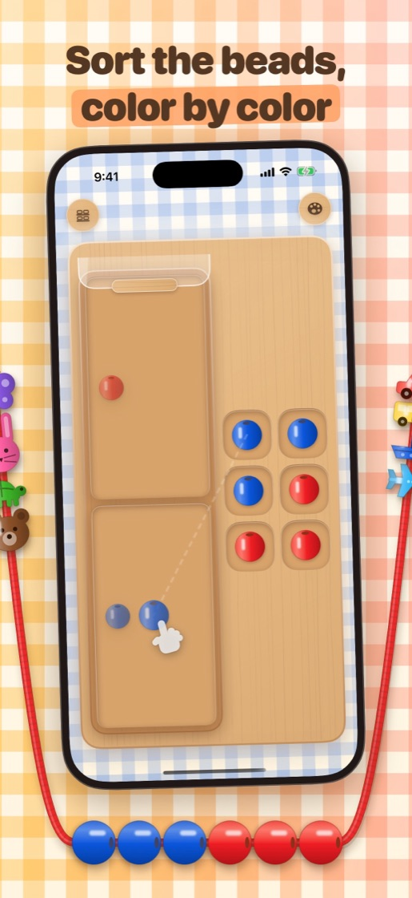
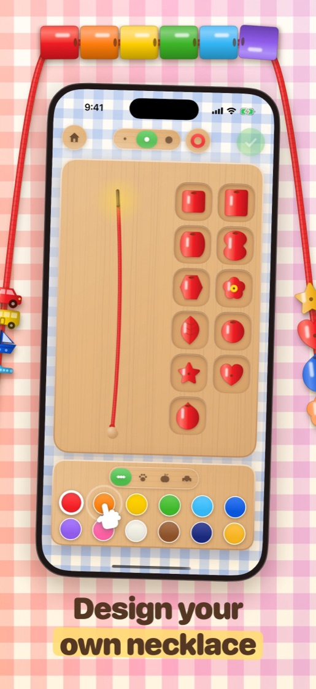
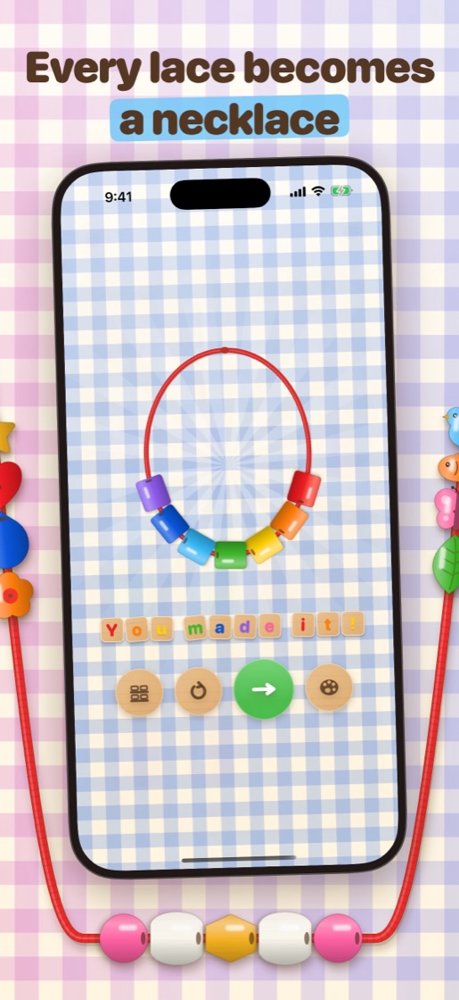
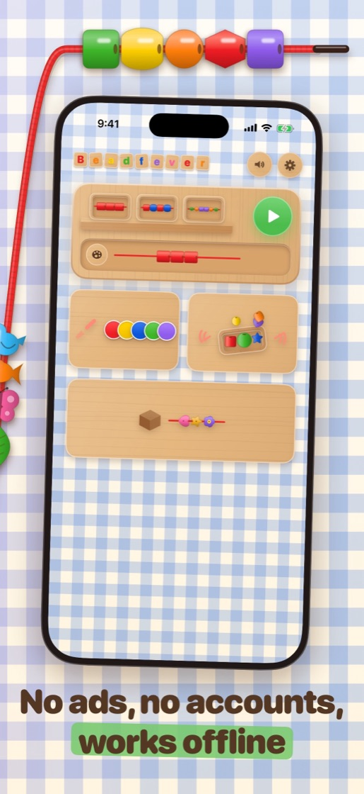

Real materials
Painted wooden beads, a red braided lace with a hard tip, a wooden stopper. Color carries meaning; nothing is there just for decoration.
Montessori bead threading for little hands
Pick a wooden bead, bring it to the tip of the lace and watch it slide down. Copy the pattern bead by bead and make a necklace of your own.
Free to download · iPhone & iPad
Beadfever is inspired by the wooden lacing beads found in every Montessori classroom. A single wooden work tray holds everything: the example lace on the left, the child's lace in the middle and the bead tray on the right. Each bead lines up next to its twin in the example, so copying feels natural.
There are no points, stars or timers. A wrong bead simply goes back to the tray and the right one in the example glows for a moment. When the lace is full, the child sees the necklace they made. That is the reward.








Painted wooden beads, a red braided lace with a hard tip, a wooden stopper. Color carries meaning; nothing is there just for decoration.
The material itself shows the mistake: the bead returns to the tray and the example glows. The child notices and corrects without being told off.
No stars, scores or streaks. Finishing a work shows the necklace the child made; repeating it or moving on is their choice.
Works wait on open wooden shelves from easy to hard. Works not yet presented show their beads in plain, unpainted wood.
Each step isolates one difficulty, then combines them.
Free play: dip into the paint pots, choose any shape or animal and thread your own necklace. Tap the last bead to take it off.
Every finished work and workshop necklace is kept here: the child's own collection.
No goal and no score: drop beads in, tilt and shake, stretch the elastic bands and gather the beads with the magnet.
A grown-up prepares a sequence and the child threads it. Favourite sequences can be kept on the shelf.
“Red cube, yellow barrel…” – the pattern is spoken in the child's language.
Flat painted wooden figures – fish, bird, turtle, bear, cat and dog, plus fruit and vehicle beads – on the shelf and in the workshop.
From about 2 to 6. Choose “Easy” in the parent settings for the youngest: a larger target and a stronger magnet at the tip of the lace.
No. Everything, including the spoken patterns, works offline.
Montessori education avoids external rewards so that the joy of the work itself drives the child. The necklace they made is the reward.
Tap the gear icon and answer the multiplication question.
iPhone and iPad with iOS 18 or later, in every orientation on iPad. English, Turkish, German, Spanish and French.
Yes: Parent area → Data → Reset progress. The treasure box can be emptied there too.
Questions, ideas or a bead your child wishes existed? Write to selahattincincin@gmail.com.